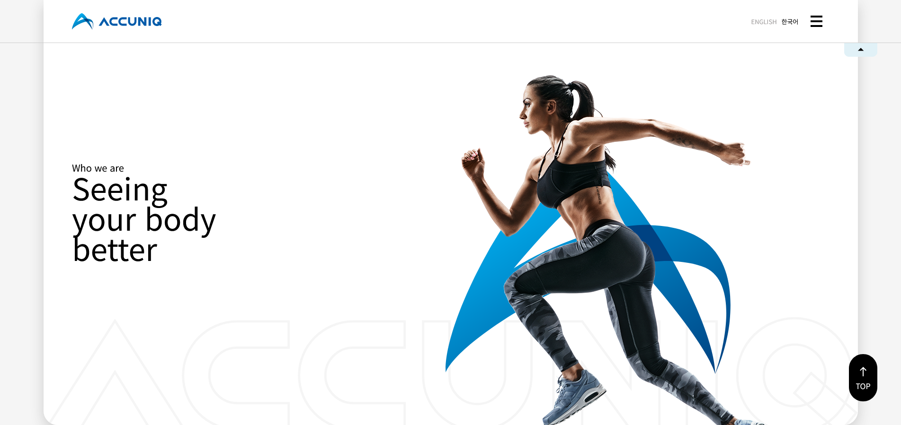
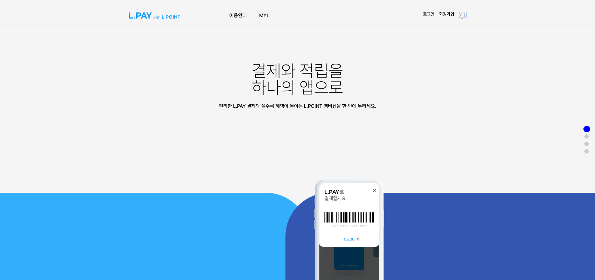
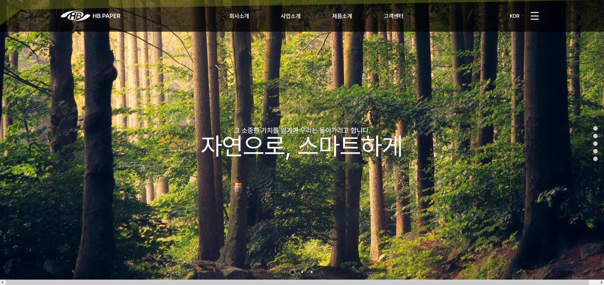

Lee
about
skill
portfolio
contact
메뉴보기
배우면서
그릇
을 늘려가는 ~ing
웹퍼블리셔 이수빈의 포트폴리오 입니다.
5개월간 배워왔던 스킬과 포트폴리오 소개입니다.
about&skill
이름:이수빈
나이:25
성별:여자
졸업:용인 송담대학교 리빙디자인과
교육:이젠 모란 웹디자인 퍼플리셔과정 5개월 수료
동기:
디자인에 대해 배우다 다른 분야도 도전을 해보고 싶어 찾다보니 UX / UI 이라는 분야가 눈에 들어왔습니다.
그 이후로 기회가 찾아와 처음 배워 페이지를 만들어 봤을 때 백지상태였던 페이지가 채워지는 느낌이 즐겁고 흥미로웠던거 같습니다.
그래서 학기를 마치고 조금더 UX/UI에 대한 공부를 하고 싶어서 웹디자인 퍼블리셔 과정을 선택했습니다.
skill
HTML5
CSS3
jQuery
Javascript
SASS
포토샵
일러스트
portfolio

프로젝트1
pf1-accuniq

프로젝트2
pf2-lpoint

프로젝트3
pf3-hbpaper